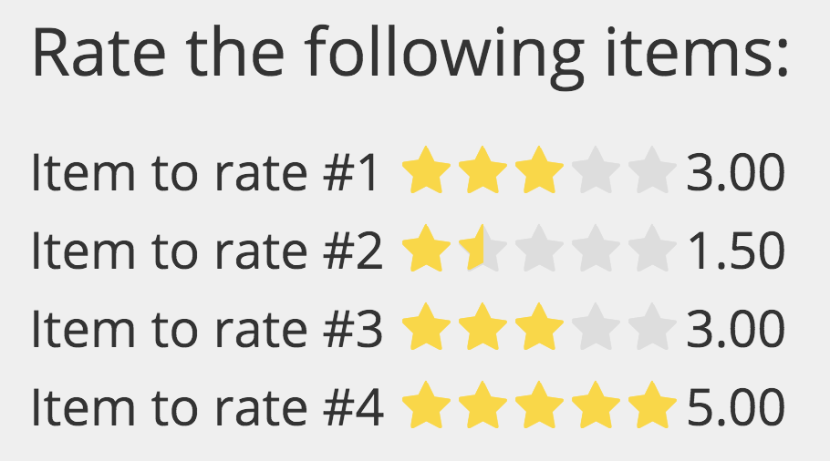
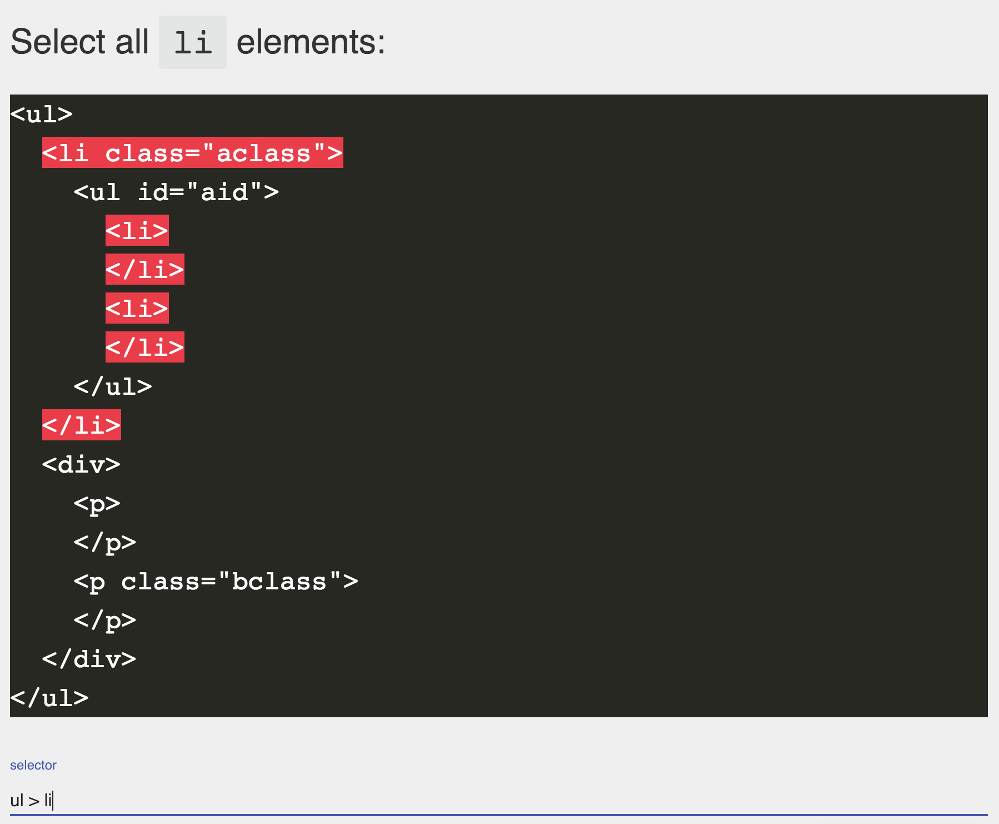
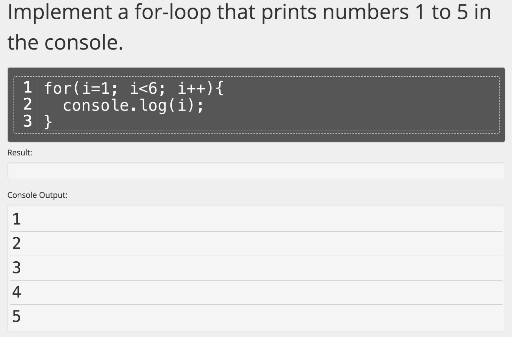
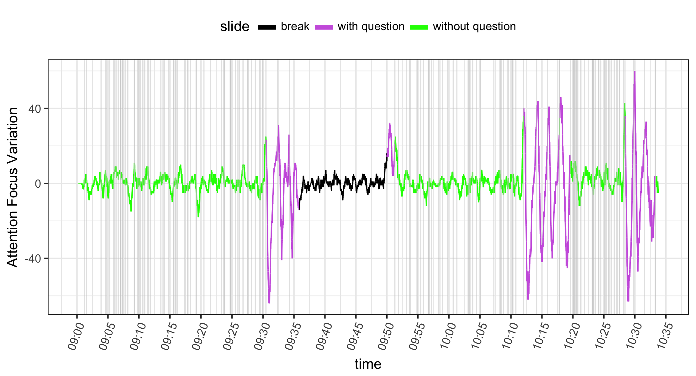

Join: http://bit.do/icwe18
 nswers
nswers
 lides
uestions
lides
uestions
ASQ: Active Learning with Interactive WebPresentations and Classroom Analytics
PhD Dissertation Defense of Vasileios Triglianos
Supervisor Prof. Cesare Pautasso
Internal Committee Members Prof. Matthias Hauswirth, Prof. Mehdi Jazayeri
External Committee Members Prof. Mária Bieliková, Prof. Pierre Dillenbourg
What does ASQ stand for?
Technology = Distraction
No Context Switch
Everyone answers










Access from any device with a browser
Analytics
ASQ tracks the viewer state
Attention Focus Variation

Asking questions wakes up the audience
Early Adopters


Professors
- "I discovered there were submissions and misconceptions that I hadn't think of. And I teach this course since 1992."
- "With ASQ students can try to answer anonymously and still get useful feedback when their solution is shared and discussed with everyone."
- "When we switch from broadcasting slides to sending questions the audience engagement goes through the roof."
Students
- "I love the program! It's great that it's a presentation and question platform at the same time."
- "Using the ASQ slides made the class very interactive and fun."
- "I like to compare my submission to others."
| presentations | slides | questions | answers | peak live users |
|---|---|---|---|---|
| 180 | 7697 | 1001 | 43160 | 318 |
…and counting!
informatics
departments & professors
in EU, approx. 620 institutions
Everywhere
where interactive presentations are needed
So far
- Fully functional research prototype - tested with more than 300 connected users
- More than 8 different courses in TU Delft, FIIT Bratislava, University of Friburg, University of Novi Sad
- 6 Publications in WWW2013, ICWE2014, ICWE2015, ECTEL2016, UMAP2017, PALE2017
- Tutorial at ICWE2018
- Demos at CeBIT2016, CeBIT2017, CeBIT2018